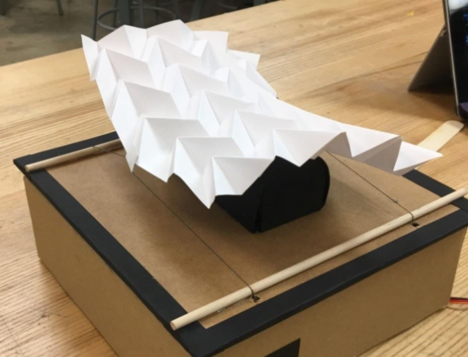
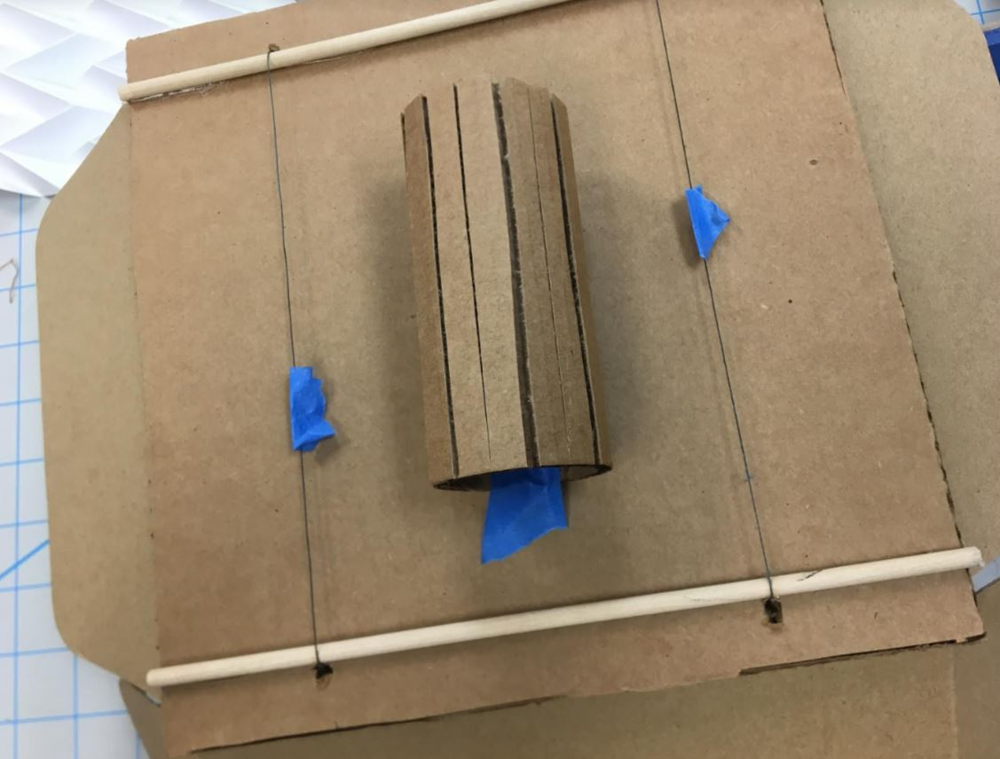

KINETIC ORIGAMI.
Initially, I ran into road bumps because the string kept digging into the cardboard base. This issue was solved by placing dowels near the openings in the lid where the string would emerge.
Additionally, I wanted my origami to have a nice curvature to it as it move, so I constructed a tube out of corrugated cardboard that I could place under my piece in order to get it to bend.
In conclusion, I feel like this piece came out really elegantly. The focus remains on the stark whiteness of the origami and the black and cardboard elements that surround it give it a nice frame. In future iterations, I’d like to construct the base out of more robust material like acrylic. It would be interesting to use transparent acrylic so viewers could see the inner workings of the piece.